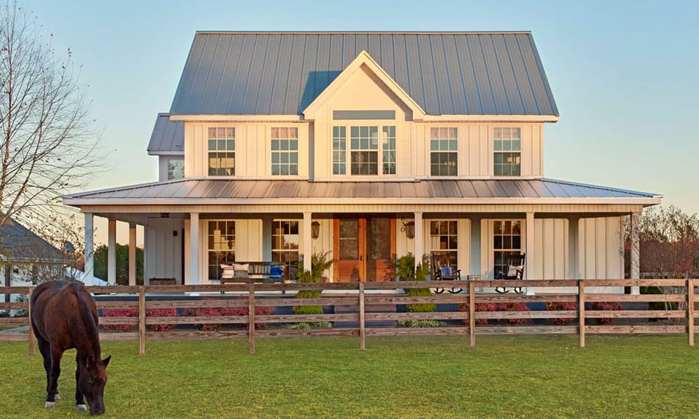

pictured above is the farmhouse your beloved pet will stay! With 15 acres to run around an explore your pet should feel right at home!
We specialize in grooming and Kennelling services of dogs all shapes and sizes!
It is our goal to make sure your dog has a wonderful stay during their time here. We handle YOUR animals as if they were our own pets! Offering a variety of services like, grooming, kennelling both long and short term, as well as providing a temporary home away from home for your fuzzy family members!
pictured above is the farmhouse your beloved pet will stay! With 15 acres to run around an explore your pet should feel right at home!